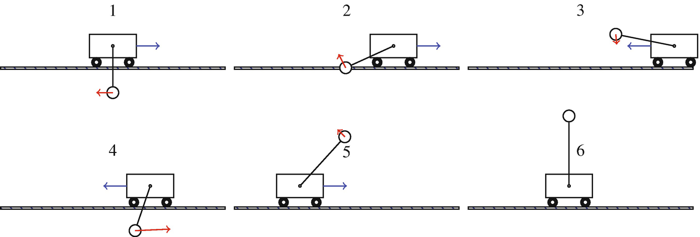
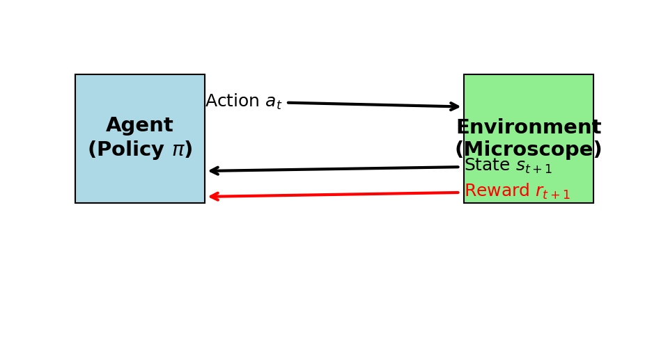
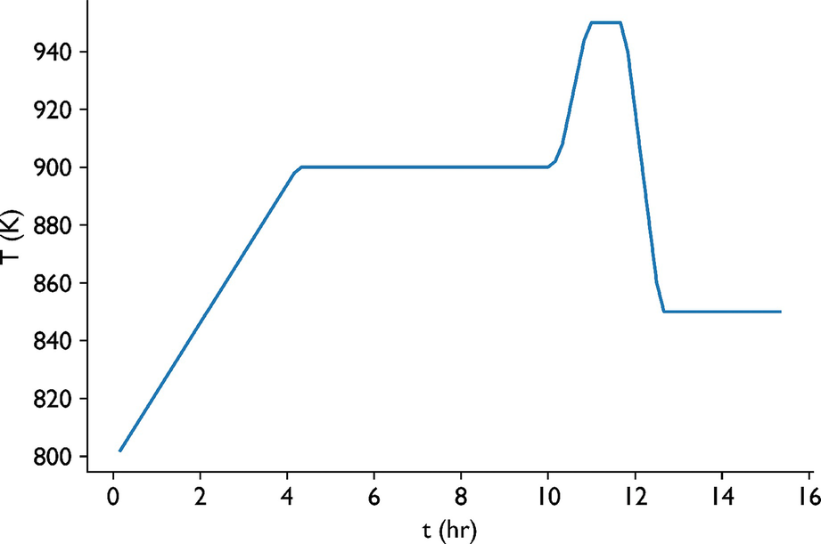

Machine Learning for Characterization and Processing
Unit 11: Automation in microscopy and characterization
AI 4 Materials / KI-Materialtechnologie
01. Intro & Motivation
The Manual Bottleneck
- Materials science is becoming high-throughput.
- 1000s of samples need characterization.
- Human operators are expensive, prone to fatigue, and introduce bias.
- Goal: Self-operating instruments that work 24/7.
The “Self-Driving” Microscope
- Traditionally: Human \(\rightarrow\) Knob \(\rightarrow\) Image \(\rightarrow\) Interpretation.
- Future: Agent \(\rightarrow\) Action \(\rightarrow\) Reward \(\rightarrow\) Discovery.
- Defining objectives (e.g., “Find all Ni-rich precipitates”) instead of commands.
02. Instrumentation & Control Basics
Control Theory: Refresher
- Feedback: Measure error, adjust control (e.g., thermostat).
- Sensors: Detectors, beam current meters.
- Actuators: Lenses, deflector coils, stage motors.
Why is Microscopy Control Hard?
- Non-linear response: Magnetic lenses, saturation.
- Hysteresis: Remanent magnetic fields.
- High-dimensionality: Aligning an EM has 50+ interactings “knobs.”
- State \(\mathbf{x}_t\): Position, focus, stigmation, illumination.
03. Reinforcement Learning (RL) Foundations
What is Reinforcement Learning?
- (McClarren Ch 9.1)
- Learning by Trial and Error.
- No labels needed! Only a Reward Signal.
- Agent (ML Model) \(\leftrightarrow\) Environment (The Microscope).

Key Components: State, Action, Reward
- State: What the microscope “sees” (current image/signal).
- Action: What the agent “does” (change lens current, move stage).
- Reward: A scalar indicating how “good” the action was.
- Policy \(\pi(s)\): Mapping from state to action.

Policy Gradients (The Strategy)
- (McClarren 9.2)
- Turning decisions into a probability distribution.
- Update the NN to make “good” decisions (high reward) more likely.
- Exploration vs. Exploitation: Trying new things vs. using what works.
04. Automation in Microscopy
Low-Level Automation: Autofocus
- Traditional: Sweep lens current, pick max sharpness.
- ML: Learn to jump directly to optimal focus from a single blurry image.
- Reward: Image sharpness index (Laplacian, FFT high-freq).
Beam Alignment & Stigmation
- Correcting for non-circular beams and tilt.
- Agent learns to adjust deflector currents by observing beam shape.
- ROI Selection: Automatically finding rare features in large samples.
Multi-Modal Data Fusion
- Combining Images (SEM), Spectra (EDS), and Diffraction (EBSD).
- Bayesian Sensor Fusion: Weighting each sensor by its precision.
- A unified material state vector \(z = f(\text{Image}, \text{Spectrum}, \text{EBSD})\).
05. Case Study: Industrial Glass Cooling
Why Process Control?
- Automation isn’t just for labs; it’s for manufacturing.
- (McClarren Ch 9.4)
- Problem: Cooling rate controls chemical reactions and physical stress.
RL Control Strategy
- Physics: Coupled Radiation and Diffusion PDEs.
- Input: Current Temp, Target Temp (Future).
- Action: Change boundary temperature \(\Delta u\).
- Reward: Inverse of squared difference from target.



- Outcome: RL learns to “overheat” to reach targets faster, discovering system lags.
06. Synthesis & Self-Driving Labs
The “Self-Driving Lab” Framework
- Automated Synthesis \(\rightarrow\) Automated Characterization \(\rightarrow\) ML Analysis \(\rightarrow\) Loop.
- Integration of Units 1-14.
- Challenges: Software APIs, data standards, and trust.
Recap: Unit 11
- RL is the engine of automation.
- Policy Gradients bridge control and deep learning.
- Reward design is the most critical human task.
- Next: Handling the “unknown” (Uncertainty and Gaussian Processes).
References & Further Reading
- McClarren (2021): Ch. 9 (Reinforcement Learning)
- Murphy (2012): Ch. 11 (Data Fusion)
- Neuer (2024): Ch. 7.3 (Automation & Causality)
Example Notebook
Week 11: Anomaly Detection via Autoencoder — CahnHilliardDataset